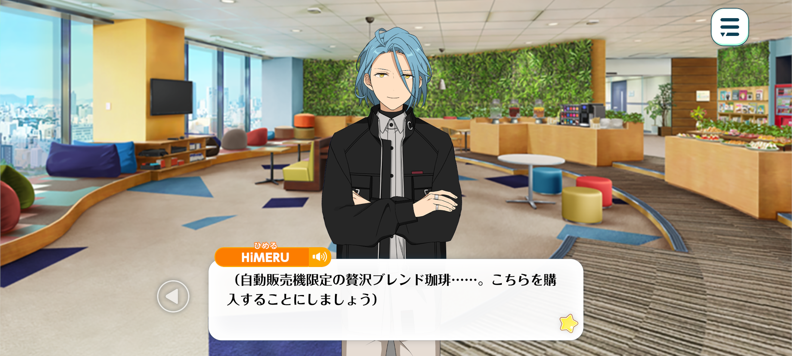
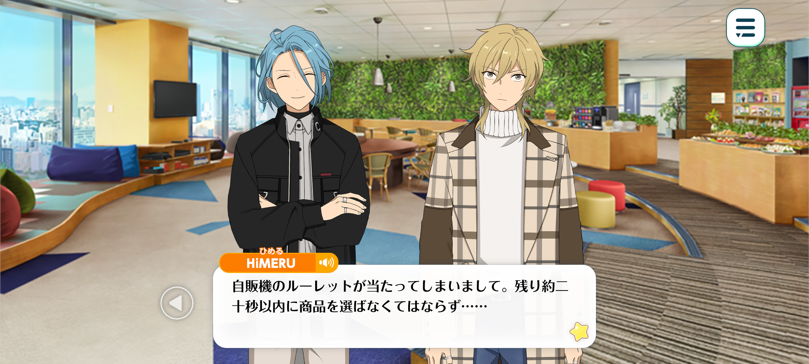
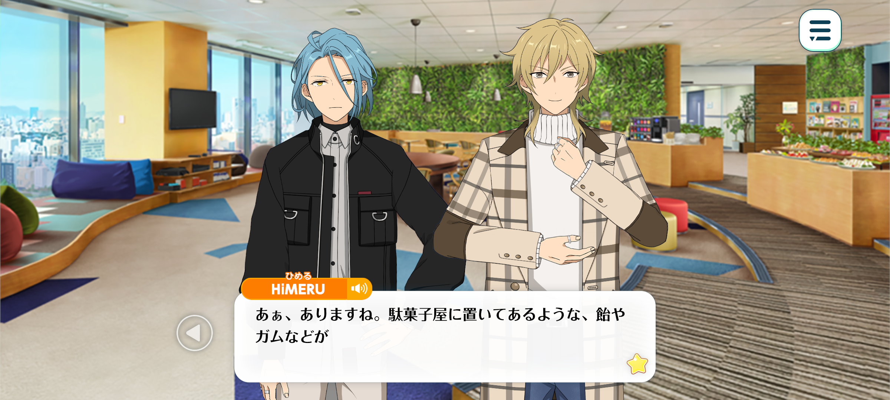
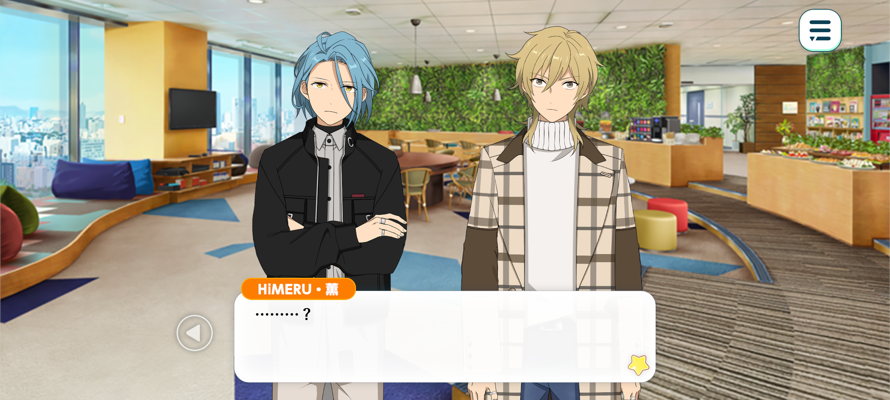

Scout! LUCKY SCRAMBLE
Fortunate Heartthrob – Chapter 3


Time: The next day

HiMERU: (A luxury coffee blend, available exclusively from this vending machine... HiMERU shall get it.)
(...Hm? This vending machine has a prize feature. The roulette is spinning.)
8, 8, 8—8?
(Fantastic. HiMERU has matched all four numbers... There's no need to wait around. Since HiMERU has won, he's entitled to choose another drink.)
(However, one coffee is quite enough for HiMERU... Hm?)
—Hakaze-senpai, what perfect timing.

Kaoru: Hm? HiMERU-kun? Did you need something?
HiMERU: HiMERU has just won the vending machine roulette. He has approximately twenty seconds to select another drink.
Would you like to choose something?
Kaoru: Eh? Really? Is that alright~? Well, I suppose I'd better hurry and pick something before the time runs out.
Then, if you don't mind... I'll have the juice ♪
Ahaha, sorry for just happening to pass by at the right moment.
HiMERU: No, HiMERU wouldn't have known what to do with the extra drink anyway. Hakaze-senpai arrived just in the nick of time.
Kaoru: Anyway, this is the first time I've ever seen a vending machine with a roulette feature. And you actually won! That's pretty amazing.
HiMERU: HiMERU was surprised as well. The odds of winning are hardly high.
Kaoru: That's your good luck at work. Maybe it's all thanks to Inaba-kun, the white rabbit~? ♪
HiMERU: ...Why are you familiar with that name, Hakaze-senpai?
Kaoru: Rei-kun was telling me about it when he got home last night. That something kinda weird happened during yesterday's recording.
When I heard about it, I thought it was pretty strange. A rabbit that can tell people's fortunes?
And now I've happened to run into you here, too. This must be that good luck of yours at work, HiMERU-kun. Perhaps the fortune-telling really was right after all... Don't you think?
HiMERU: I see. So that's how it is. Well, it certainly was unusual for Inaba-san to leap onto HiMERU's lap...
Still, HiMERU doesn't believe that fortune-telling can bring about extraordinary good luck.
Winning the roulette was also simply a coincidence. HiMERU considers it nothing more than a rare occurrence.
Kaoru: Really~? If something like that happened to me, I'd just accept it for what it is. It's much more fun that way, don't you think?
Anyway, you just said that winning was also a coincidence. What other lucky things have happened to you?
HiMERU: —Nothing that could particularly be described as extraordinary good fortune.
However, on the way home from the television station, HiMERU didn't encounter a single red light.
And Nagumo was playing a game, so HiMERU ‘pulled’ for him. He called HiMERU a "God Gamer" afterwards. That sort of thing.
Kaoru: Ehhh, really~?
Maybe you're going to get even luckier from here on out? I mean, you were told to "please prepare yourself for tomorrow", weren't you?
HiMERU: You're rather well-informed about the situation.
Kaoru: Ahaha, sorry~? Rei-kun does love to gossip, and I'm always happy to lend an ear ♪
...Anyway, there's a little snack corner in the break room, isn't there?
HiMERU: Ah, yes. Someone has set up a small dagashiya with hard candies, gum and the like.[1]

Kaoru: Hey, why don't we put your good luck to the test?
Although, even if you win, I guess you'll just say it doesn't mean anything.
HiMERU: —Mhm. As thanks for you taking the juice, HiMERU shall humour you.
Kaoru: Let's see... Hard candies, gum, chocolate, gummies. Any of these will do, so why don't we just pick a few at random?
HiMERU: Very well...
Kaoru: Oh? You picked the one right in front of you and another from the top without giving it much thought.
HiMERU: It wouldn't be a proper test of luck if HiMERU were to deliberate over the choices.
Kaoru: I see~. Well, if HiMERU-kun really is lucky, you'll manage to win another prize.
HiMERU: HiMERU doesn't particularly believe in such things, but very well. Shall we open them now?
Kaoru: Okay! With these sorts of things, you can tell whether you've won or not by checking the inside of the wrapper or packaging~
Whoa! The gummies I picked are a winner! What about yours, HiMERU-kun?
HiMERU: ...Both the hard candy and the chocolate are winners.
Kaoru: Eeeh? Wait a minute! You haven't opened the gum yet. Go on, open that one too—
HiMERU: “You won”...
Kaoru: ...No way! I was only making a suggestion, but it actually happened. Now that's quite a twist!
HiMERU: —HiMERU agrees. These coincidences are becoming rather troublesome.
Kaoru: Are they really just coincidences, though~? I mean, your good luck has already started, hasn't it?
HiMERU: No. HiMERU is certain that these are all coincidences. Besides, we don't even know how many of these snacks are winning prizes to begin with.
Kaoru: Well... I opened some gum and chocolate just now, and neither of mine were winners.
Honestly, I'm a little disappointed. I thought I might be able to borrow a bit of that good luck of yours...!
...But I suppose that's just how it goes. You don't seem particularly pleased with all these consecutive wins, do you?
I could tell from the way you've been talking. You're the sort of person who wouldn't believe in fortune-telling, no matter how favourable the results might be, aren't you?
HiMERU: ...HiMERU supposes you could say that.
It is uncomfortable for HiMERU’s own words and actions, or in this context, the results of his fortune-telling, to be interpreted by others through such a predetermined, preconceived lens, one that HiMERU has no control over.
HiMERU is the only one who can make decisions about HiMERU.
Kaoru: Hmm... Is that your personal philosophy?
Well, everyone's entitled to their own way of thinking. If you want to keep believing it's all just coincidence, that's perfectly fine—

???: Aah! HiMERU-senpai’s here…!
I finally found him! Sakuma-senpai, over here!
HiMERU: …?
Kaoru: …?
- basically they’re these shops that sell super cheap sweets for like 20 yen? and often on the inside of the packaging it might say you've won!! and then you get another one for free